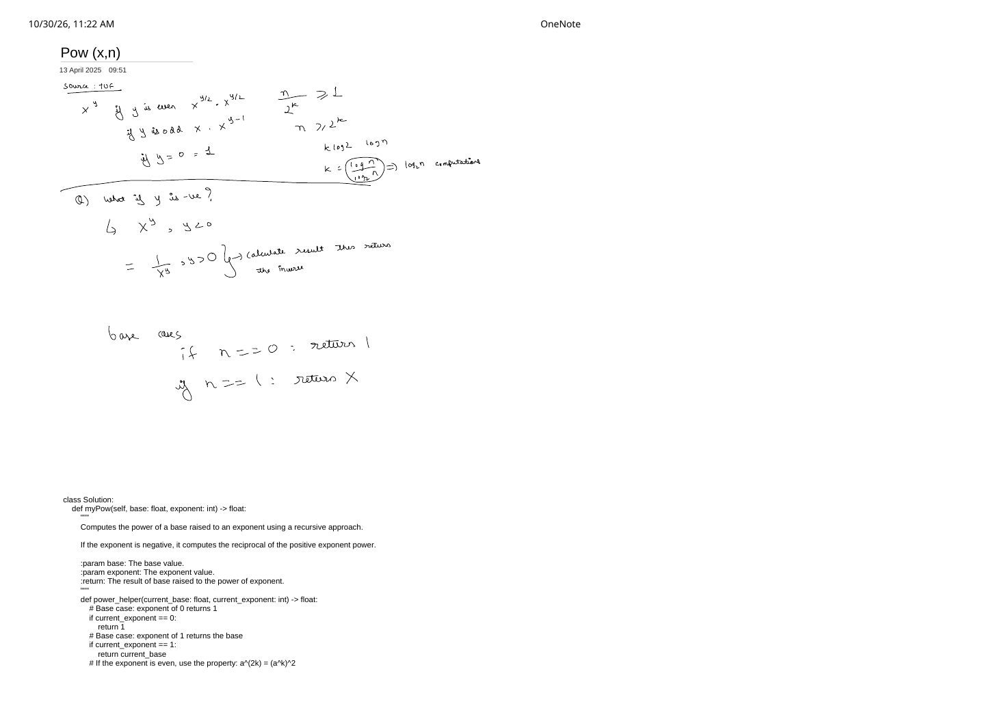
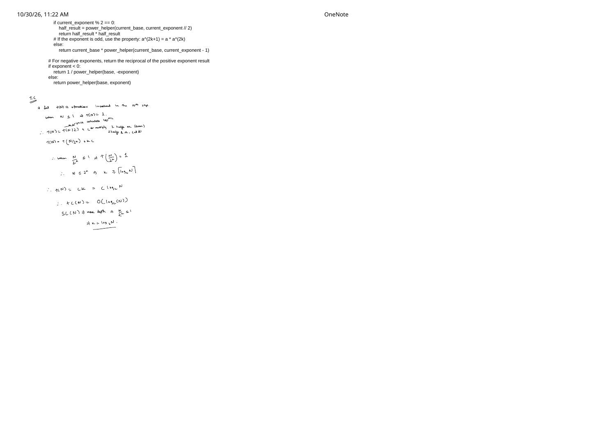

Pow(x, n) & Binary Exponentiation: Odd/Even Halving, Complexity Proof & The INT_MIN Trap
Expanded from handwritten competitive coding study notes (01_Pow_x_n.pdf)
Computing $x^n$ by multiplying $x$ by itself $|n|$ times takes $O(|n|)$ operations—which immediately times out on LeetCode 50: Pow(x, n) where $-2^{31} \le n \le 2^{31} - 1$ ($\approx 2.15 \times 10^9$ multiplications!). Binary exponentiation (exponentiation by squaring) exploits parity halving to compute $x^n$ in at most $31$ squarings: $O(\log_2 |n|)$ time.
1. The Odd / Even Halving Recurrence
For any real base $x$ and non-negative integer exponent $y \ge 0$, splitting on whether $y$ is even or odd halves the exponent at least every two steps:
Binary Exponentiation Recurrence (Page 1)
Negative exponents ($y < 0$): Since $x^{-|y|} = \dfrac{1}{x^{|y|}}$ (assuming $x \neq 0$), we either invert the base up front ($x \leftarrow 1/x,\; y \leftarrow |y|$) or compute $x^{|y|}$ and return its reciprocal $1 / \text{result}$.
Classic Recursion Mistake: Computing half Twice!
Writing return power(x, y / 2) * power(x, y / 2); branches into two identical recursive calls at every even step, turning the recurrence into $T(N) = 2T(N/2) + O(1) = \mathbf{\Theta(N)}$—right back to linear time! Always cache double half = power(x, y / 2); return half * half; so only one recursive branch executes.
2. The C++ INT_MIN ($-2^{31}$) Signed Overflow Trap
In Python, integers have arbitrary precision, so writing -exponent on Page 2 never overflows. In C++ (and Java/Rust), int n is a 32-bit two's complement signed integer with asymmetric range:
Undefined Behavior When $n = \text{INT\_MIN}$
If $n = -2^{31} = -2{,}147{,}483{,}648$, the mathematical negation $+2{,}147{,}483{,}648$ is $1$ larger than $\text{INT\_MAX} = 2{,}147{,}483{,}647$! Evaluating -n while n is still a 32-bit int triggers signed integer overflow (Undefined Behavior in C++), which LeetCode's UndefinedBehaviorSanitizer immediately rejects.
Fix: Copy int n into a 64-bit long long N = n; before negating: N = -N; safely produces $+2{,}147{,}483{,}648$ in 64 bits!
3. Recursive & Iterative $O(\log |n|)$ Implementations
Approach A: Recursive Halving (C++ & Handwritten Python)
First, the clean C++ translation of the recursive helper from Pages 1–2 with 64-bit exponent promotion:
class Solution {
double powerHelper(double base, long long exp) {
if (exp == 0) return 1.0;
if (exp == 1) return base;
if (exp % 2 == 0) {
double half = powerHelper(base, exp / 2);
return half * half;
}
return base * powerHelper(base, exp - 1);
}
public:
double myPow(double x, int n) {
long long N = n; // Promote BEFORE negating to avoid INT_MIN overflow!
if (N < 0) {
return 1.0 / powerHelper(x, -N);
}
return powerHelper(x, N);
}
};And the exact Python structure recorded in the notes:
class Solution:
def myPow(self, base: float, exponent: int) -> float:
def power_helper(current_base: float, current_exponent: int) -> float:
if current_exponent == 0:
return 1.0
if current_exponent == 1:
return current_base
if current_exponent % 2 == 0:
half_result = power_helper(current_base, current_exponent // 2)
return half_result * half_result
else:
return current_base * power_helper(current_base, current_exponent - 1)
if exponent < 0:
return 1.0 / power_helper(base, -exponent)
return power_helper(base, exponent)Approach B: Iterative Bitwise Binary Exponentiation ($O(1)$ Space)
Every non-negative integer $N$ has binary representation $N = \sum_{k \ge 0} b_k 2^k$ with $b_k \in \{0, 1\}$, so $x^N = \prod_{b_k = 1} x^{2^k}$. Scanning the bits of $N$ from least significant to most significant eliminates recursion stack overhead completely:
class SolutionIterative {
public:
double myPow(double x, int n) {
long long N = n;
if (N < 0) {
x = 1.0 / x;
N = -N;
}
double ans = 1.0;
while (N > 0) {
if (N & 1LL) { // Odd exponent (lowest bit == 1): multiply current x^(2^k)
ans *= x;
}
x *= x; // Square base for next bit position: x^(2^(k+1))
N >>= 1; // Halve exponent: N = N / 2
}
return ans;
}
};4. Time & Space Complexity Derivation (Page 2)
Following the exact recurrence unrolling written at the bottom of Page 2:
Unrolling $T(N)$ Step by Step
Let $T(N)$ denote the work to evaluate powerHelper(x, N). Note that if $N$ is odd, one $O(1)$ step reduces $N \to N - 1$ (even) and the very next step halves $(N - 1)/2 = \lfloor N/2 \rfloor$, so every $\le 2$ recursive calls halve $N$ with constant work $c$:
The base case $T(1) = O(1)$ is hit as soon as $\dfrac{N}{2^k} \le 1 \iff N \le 2^k \iff k = \lceil \log_2 N \rceil$:
- Time Complexity: $T(|n|) = c \lceil \log_2 |n| \rceil + O(1) = \mathbf{O(\log |n|)}$.
- Space Complexity: $\mathbf{O(\log |n|)}$ call-stack frames for the recursive implementation; $\mathbf{O(1)}$ auxiliary memory for the iterative bitwise loop.
long long, reduce a %= M initially, and replace ans *= x and x *= x with ans = (ans * a) % M and a = (a * a) % M!
From the Handwritten Notes
Expand the original handwritten pages below to inspect the exact derivations, dry runs, and annotations:
View original note — Page 1: Odd/Even Recurrence, Negative Exponents & Recursive Helper Setup


01_Pow_x_n.pdf: parity recurrence, negative exponent inversion $1 / x^{|y|}$, base cases, and Python setup.View original note — Page 2: Recursive Completion & Unrolled O(log N) Complexity Proof


01_Pow_x_n.pdf: caching half_result and deriving $k = \lceil \log_2 N \rceil$ time and stack depth.